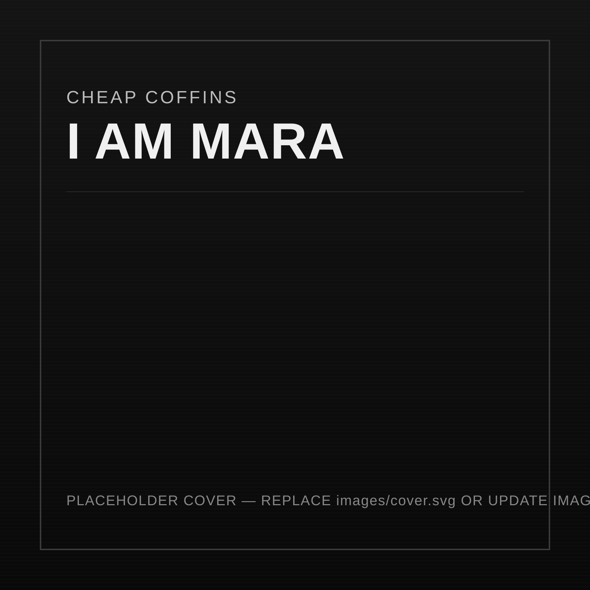

Short Description
A dark, tightly edited record built around emotional restraint, stark dynamics, and narrative lyric work designed for repeated listening.
Private Access
This page is intended for labels, media, promoters, and collaborators.
Private stream / advance preview
I AM MARA is a focused, full-length statement balancing post-punk tension, cinematic noise, and disciplined songwriting, assembled for serious release and media consideration.

A dark, tightly edited record built around emotional restraint, stark dynamics, and narrative lyric work designed for repeated listening.
Post-punk, alternative rock, and industrial-leaning darkwave.
Based in [City, Region].
Final mixes complete; private pre-release stream now open for consideration.
Interpol, Chelsea Wolfe, The Soft Moon, early Nine Inch Nails.
Private streaming preview for labels, media, and collaborators.
Cheap Coffins is an independent project centered on disciplined composition, high-contrast production, and a long-form visual identity. I AM MARA extends the project’s darker direction with a more precise editorial focus, intended for thoughtful coverage, strategic partnerships, and selective live opportunities.
For audiences of dark alternative music with post-punk and industrial crossover taste.
Strong sequencing, immediate tonal identity, and clear single/cutdown opportunities.
Minimal low-end pressure, sharp guitar architecture, and cinematic vocal framing.
Recorded across home and studio sessions; arranged for compact, high-impact live adaptation.
Prior independent releases built a niche listener base and early press interest in dark editorial spaces.
Primary Contact: [Name]
Email: contact@example.com
Socials: @cheapcoffins (Instagram) / @cheapcoffins (X)
Management / Booking / Label: [Optional line for representation details]